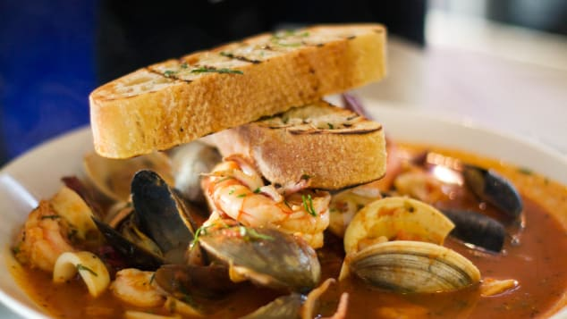
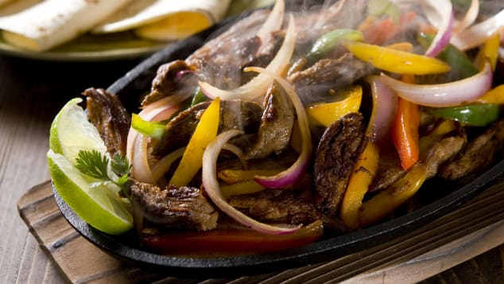
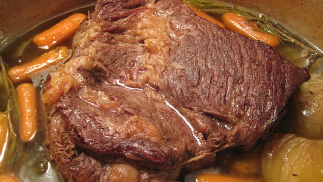

3 tablespoons olive oil
1 large fennel bulb, thinly sliced
1 onion, chopped
3 large shallots, chopped
2 teaspoons salt
4 large garlic cloves, finely chopped
3/4 teaspoon dried crushed red pepper flakes, plus more to taste
1/4 cup tomato paste
1 (28-ounce) can diced tomatoes in juice
1 1/2 cups dry white wine
5 cups fish stock
1 bay leaf
1 pound manila clams, scrubbed
1 pound mussels, scrubbed, debearded
1 pound uncooked large shrimp, peeled and deveined
1 1/2 pounds assorted firm-fleshed fish fillets such as halibut or salmon, cut into 2-inch chunks
1.Heat the oil in a very large pot over medium heat. Add the fennel, onion, shallots, and salt and saute until the onion is translucent, about 10 minutes. Add the garlic and 3/4 teaspoon of red pepper flakes, and saute 2 minutes. Stir in the tomato paste. Add tomatoes with their juices, wine, fish stock and bay leaf. Cover and bring to a simmer. Reduce the heat to medium-low. Cover and simmer until the flavors blend, about 30 minutes.
2.Add the clams and mussels to the cooking liquid. Cover and cook until the clams and mussels begin to open, about 5 minutes. Add the shrimp and fish. Simmer gently until the fish and shrimp are just cooked through, and the clams are completely open, stirring gently, about 5 minutes longer (discard any clams and mussels that do not open). Season the soup, to taste, with more salt and red pepper flakes.
3.Ladle the soup into bowls and serve

4 tablespoons canola oil, divided
2 tablespoons lemon juice
1-1/2 teaspoons seasoned salt
1-1/2 teaspoons dried oregano
1-1/2 teaspoons ground cumin
1 teaspoon garlic powder
1/2 teaspoon chili powder
1/2 teaspoon paprika
1/2 teaspoon crushed red pepper flakes, optional
1-1/2 pounds boneless skinless chicken breasts, cut into thin strips
1/2 medium sweet red pepper, julienned
1/2 medium green pepper, julienned
4 green onions, thinly sliced
1/2 cup chopped onion
6 flour tortillas (8 inches), warmed
Optional: Shredded cheddar cheese, taco sauce, salsa, guacamole, sliced red onions and sour cream
1.In a large bowl, combine 2 tablespoons oil, lemon juice and seasonings; add the chicken. Turn to coat; cover. Refrigerate for 1-4 hours.
2.In a large cast-iron or other heavy skillet, saute peppers and onions in remaining oil until crisp-tender. Remove and keep warm.
3.Drain chicken, discarding marinade. In the same skillet, cook chicken over medium-high heat until no longer pink, 5-6 minutes. Return pepper mixture to pan; heat through.
4.Spoon filling down the center of tortillas; fold in half. Add toppings as desired, fold in half.

Salt and freshly ground black pepper
One 3- to 5-pound chuck roast
2 or 3 tablespoons olive oil
2 whole onions, peeled and halved
6 to 8 whole carrots, unpeeled, cut into 2-inch pieces
1 cup red wine, optional
3 cups beef broth
2 or 3 sprigs fresh rosemary
2 or 3 sprigs fresh thyme
1.Preheat the oven to 275 degrees F.
2.Generously salt and pepper the chuck roast.
3.Heat the olive oil in large pot or Dutch oven over medium-high heat. Add the halved onions to the pot, browning them on both sides. Remove the onions to a plate.
4.Throw the carrots into the same very hot pot and toss them around a bit until slightly browned, about a minute or so. Reserve the carrots with the onions.
5.If needed, add a bit more olive oil to the very hot pot. Place the meat in the pot and sear it for about a minute on all sides until it is nice and brown all over. Remove the roast to a plate.
6.With the burner still on high, use either red wine or beef broth (about 1 cup) to deglaze the pot, scraping the bottom with a whisk. Place the roast back into the pot and add enough beef stock to cover the meat halfway.
7.Add in the onions and the carrots, along with the fresh herbs.
8.Put the lid on, then roast for 3 hours for a 3-pound roast. For a 4 to 5-pound roast, plan on 4 hours. The roast is ready when it's fall-apart tender.